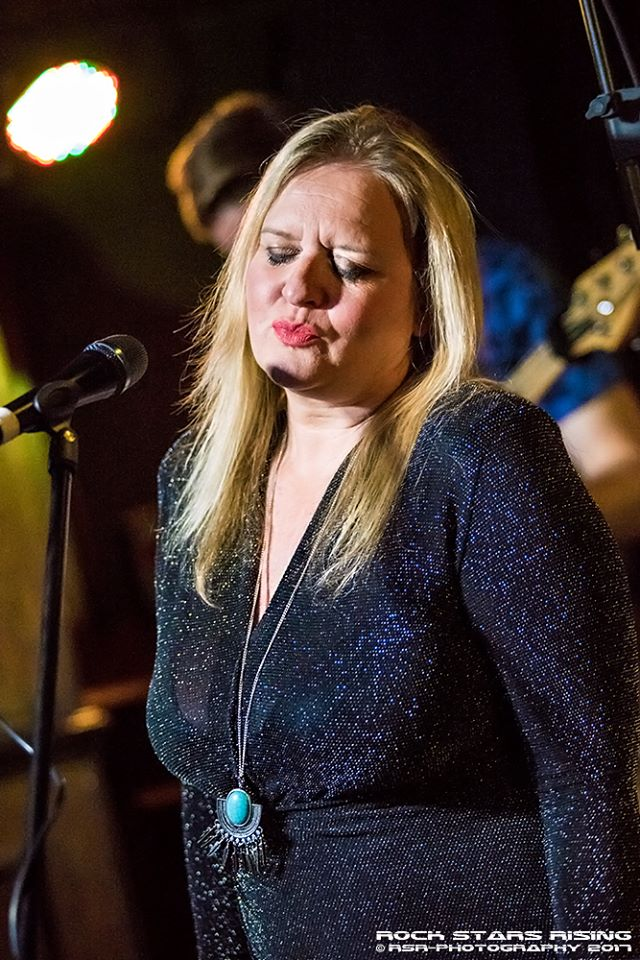
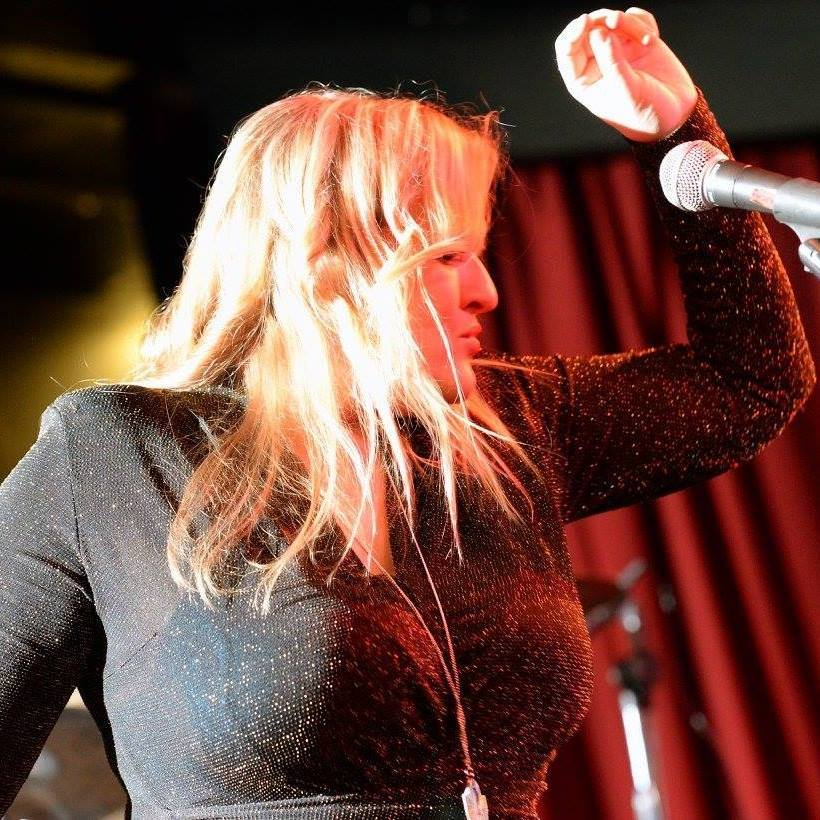
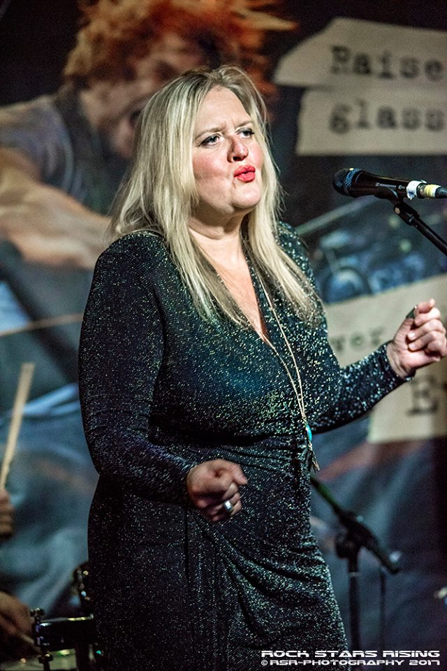

"Emma is a big fan of Aretha Franklin and Ann Peebles and boy does she do their material well!"
Mike Prendergast -(Blues Promoter - Darlington Blues Festival)

"Deserves comparing with the great blues sirens, oozes class and charm"
Paul Dubbleman (Rock Photographer & Journalist)

"I love her voice, it's so soulful"
Mick Glossop (Record Producer for Van Morrison, John Lee Hooker)
